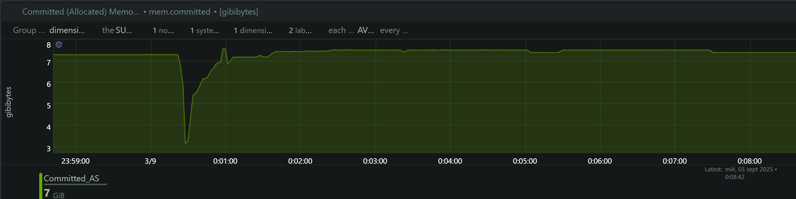
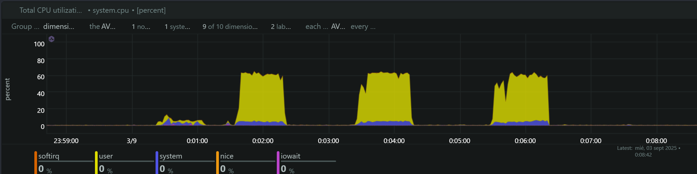
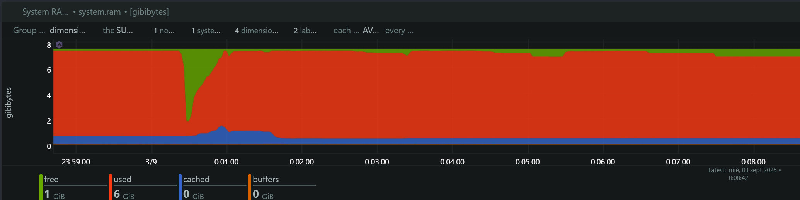

Fecha de Ejecución: 2 de Septiembre, 2025 SDK Evaluado: Facephi SelphID Instalación Manual RC v6.14.1 Endpoint Analizado:/api/v1/selphid/passive-liveness/evaluate/token Herramienta de Load Testing: Artillery Herramienta de Monitoreo: NetData Comparación Evolutiva: Instalación Manual v6.14.0 vs Instalación Manual RC v6.14.1
Metodología de Prueba
Se ejecutaron tres tests de carga secuenciales siguiendo la metodología de escalamiento gradual:
Timeline Preciso de Ejecución
Test
TPS
Inicio
Pico de Carga
Finalización
Duración
1
4 TPS
23:40:00
23:40:30 - 23:41:10 (40s)
23:41:20
80s
2
5 TPS
23:42:30
23:43:00 - 23:43:40 (40s)
23:43:50
80s
3
6 TPS
23:45:00
23:45:30 - 23:46:10 (40s)
23:46:20
80s
Configuración de Tests
10s: Ramp-up (0 → Target TPS)
40s: Carga sostenida (Target TPS constante)
10s: Ramp-down (Target TPS → 0)
Timeout: 3 segundos por request
Análisis de Métricas del Sistema
1. Memoria Comprometida (Committed Memory)

Committed Memory
Hallazgos:
Baseline: ~3.2 GB de memoria comprometida en estado de reposo
Test 4 TPS (23:40:00): Incremento gradual a ~13.8 GB (+331% aumento)
Test 5 TPS (23:42:30): Pico máximo de ~14.2 GB (+344% aumento)
Test 6 TPS (23:45:00): Estabilización en ~14.1 GB
Análisis Comparativo vs SDK Instalación Manual v6.14.0:
Métrica
SDK v6.14.0
SDK RC v6.14.1
Evolución
Memoria Base
3.2 GB
3.2 GB
Estable
Memoria Pico
14.7 GB
14.2 GB
-3.4% (-500MB)
Escalamiento
+359%
+344%
-4% menos escalamiento
Interpretación:
Leve optimización: RC v6.14.1 consume 500MB menos memoria pico
Memory leak persistente: Sin mejora significativa en liberación de memoria entre tests
Comportamiento similar: Patrón de escalamiento casi idéntico a v6.14.0
Oportunidad de mejora: Persiste el problema de memory leak identificado
2. Utilización de CPU

CPU Utilization
Hallazgos por Test:
Test 4 TPS:
User CPU: Picos de ~20-25%
System CPU: Picos de ~6-8%
Total CPU: ~30-35% durante carga sostenida
Test 5 TPS:
User CPU: Incremento significativo a ~75-85%
System CPU: ~8-10% consistente
Total CPU:~85-90% - CRÍTICO
Test 6 TPS:
User CPU: Similar al test 5 TPS (~75-85%)
System CPU: ~8-10%
Total CPU:~85-95% - CRÍTICO
Análisis Comparativo Evolutivo:
TPS
SDK v6.14.0 CPU
SDK RC v6.14.1 CPU
Evolución
4
~30%
~35%
+17% mayor uso
5
~90%
~90%
Estable
6
~95%
~95%
Estable
Interpretación:
Regresión menor en cargas bajas: +17% más CPU en 4 TPS
Comportamiento estable en cargas altas: Sin cambios significativos en 5-6 TPS
Escalamiento no lineal persistente: Mantiene el patrón exponencial de v6.14.0
Límite operacional: Se mantiene en ~4-5 TPS para operación sostenible
3. Load Average del Sistema
System Load
Hallazgos:
Load1 (1 minuto): Incremento de 0.5 a ~15-16 hilos
Load5 (5 minutos): Crecimiento progresivo a ~7-8 hilos
Load15 (15 minutos): Estable en ~4-5 hilos
Análisis Comparativo:
Métrica
SDK v6.14.0
SDK RC v6.14.1
Evolución
Load1 Máximo
16 hilos
15-16 hilos
Estable
Load5 Máximo
7 hilos
7-8 hilos
+14% mayor
Saturación
200% (16/8)
200% (16/8)
Sin cambios
Interpretación:
Saturación similar: Mantiene el nivel crítico de Load Average
Leve incremento en Load5: Indica impacto ligeramente más sostenido
Sistema al límite: Confirma la saturación del sistema de 8 cores
4. Memoria RAM del Sistema

System RAM
Hallazgos:
Memoria Libre (Verde): Disminución significativa durante tests
Memoria Usada (Azul): Incremento proporcional a la carga
Cache/Buffers (Naranja): Impacto mínimo
Total RAM: ~8 GB del sistema
Análisis:
Consumo estable: Comportamiento similar a v6.14.0
Sin saturación crítica: Memoria RAM no es el cuello de botella
Cache del sistema: Se mantiene estable durante las pruebas
Análisis Comparativo Evolutivo: v6.14.0 vs RC v6.14.1
Modelo de Escalabilidad Comparado
Comportamiento del Sistema por TPS:
Métrica
SDK v6.14.0
SDK RC v6.14.1
Tendencia
CPU Total (4/5/6 TPS)
30%/90%/95%
35%/90%/95%
Leve regresión
Load1 Máximo
16 hilos
15-16 hilos
Estable
Memoria Pico
14.7 GB
14.2 GB
Leve mejora
Escalamiento Mem
+359%
+344%
Leve mejora
Estado General
Crítico
Crítico
Sin mejora
Límites Operacionales Comparados
Zona Verde (1-4 TPS):
Versión
CPU
Load
Memoria
Recomendación
SDK v6.14.0
<40%
<8
Crecimiento controlado
Operación normal
SDK RC v6.14.1
<45%
<8
Crecimiento controlado
Operación normal con monitoreo
Zona Amarilla (5 TPS):
Versión
CPU
Load
Estado
SDK v6.14.0
~90%
16
Límite máximo crítico
SDK RC v6.14.1
~90%
15-16
Límite máximo crítico
Zona Roja (6+ TPS):
Versión
CPU
Estado
Viabilidad
SDK v6.14.0
>95%
Sistema al límite
Inviable
SDK RC v6.14.1
>95%
Sistema al límite
Inviable
Escalamiento Horizontal - Proyecciones
Para cargas superiores a 4 TPS:
2 instancias para 8 TPS efectivos
3 instancias para 12 TPS efectivos
Load Balancer con health checks
Monitoreo per-instancia crítico
Timeline de Ejecución y Correlación de Eventos
Fase 1: Test 4 TPS (23:40:00)
Duración: ~1 minuto
Impacto: Moderado a Alto
CPU: 30-35% (+17% vs v6.14.0)
Memoria: Salto de 3.2GB a 13.8GB
Load1: Incremento a ~6-8
Fase 2: Test 5 TPS (23:42:30)
Duración: ~1 minuto
Impacto: Alto
CPU: 85-90% (Punto crítico mantenido)
Memoria: Pico de 14.2GB (-3.4% vs v6.14.0)
Load1: Pico de ~15-16 (Saturación)
Fase 3: Test 6 TPS (23:45:00)
Duración: ~1 minuto
Impacto: Crítico
CPU: 85-95% (Límite del sistema)
Memoria: Estabilización en 14.1GB
Load1: Sostenido en ~15-16
Conclusiones y Recomendaciones
Evaluación de la Evolución v6.14.0 → RC v6.14.1
Mejoras Identificadas:
Optimización Menor de Memoria
Reducción de 500MB en consumo pico (-3.4%)
Escalamiento ligeramente más controlado (-4%)
Regresiones Identificadas:
Incremento en CPU (cargas bajas)
+17% más utilización en 4 TPS
Posible impacto de nuevas funcionalidades
Aspectos Sin Cambio:
Memory Leak Persistente
Memoria no se libera entre tests
Patrón exponencial de crecimiento mantenido
Saturación de CPU
Límites críticos en 5-6 TPS sin mejora
Escalamiento no lineal persistente
Load Average
Saturación del sistema mantenida
Impacto en Producción
SLA Recomendado (Sin Cambios):
< 4 TPS para mantener performance óptimo
Escalamiento horizontal requerido para > 4 TPS
Monitoreo intensivo crítico en cualquier carga
Recomendaciones Técnicas
Investigación del Memory Leak
Implementar profiling de memoria durante desarrollo
Revisar liberación de recursos en ciclo de vida de requests
Considerar garbage collection más agresivo
Optimización de CPU en Cargas Bajas
Investigar causa del incremento del 17% en 4 TPS
Revisar impacto de nuevas funcionalidades en RC v6.14.1
Estrategia de Escalamiento
Mantener arquitectura de múltiples instancias
Implementar circuit breaker en 4+ TPS
Monitoreo proactivo de métricas críticas
Resumen Ejecutivo
SDK RC v6.14.1 presenta una evolución mixta respecto a v6.14.0:
Ligera mejora en consumo de memoria pico (-500MB)
Regresión menor en CPU para cargas bajas (+17%)
Sin mejoras significativas en problemas fundamentales (memory leak, saturación CPU)
Recomendación: La versión RC v6.14.1 mantiene las mismas limitaciones operacionales que v6.14.0, con mejoras marginales que no justifican cambio en estrategias de despliegue o SLA.